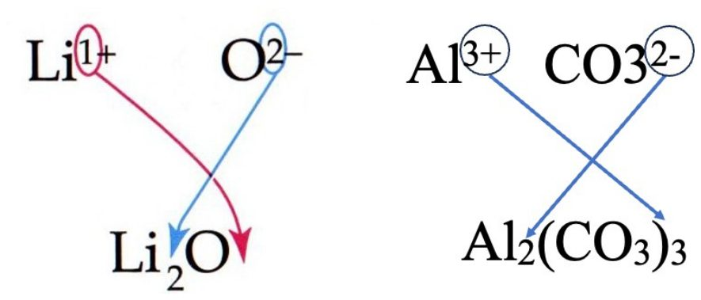

Ions
When an atom loses or gains electrons, its numbers of protons and electrons become unequal. An atom (or group of atoms) that has lost or gained electrons is an ion.
- If an atom loses electrons, the number of protons is greater than the number of electrons, so it has a positive charge: a positive ion (cation).
- If an atom gains electrons, the number of protons is less than the number of electrons, so it has a negative charge: a negative ion (anion).
| Atom | Protons | Electrons | Charge on ion | Symbol for ion |
|---|---|---|---|---|
| Sodium | 11 | 10 | +1 | Na+ |
| Chlorine | 17 | 18 | −1 | Cl− |
| Magnesium | 12 | 10 | +2 | Mg2+ |
| Oxygen | 8 | 10 | −2 | O2− |
PracticeExercise
- An atom with 9 protons and 10 electrons has a charge.
- If a calcium atom loses 2 electrons, it will have a charge and its symbol will be written as .
- A sulfide ion with the symbol S2− has protons and electrons.
Writing ionic formulas
Learn the language of chemical formulas, especially for ionic compounds: symbols and subscripts show the composition of a compound. Writing an ionic formula means combining positive ions (cations) with negative ions (anions) to make an electrically neutral compound.
- Determine the charges of the ions involved.
- Use the criss-cross method and reduce the subscripts. The size of each ion's charge becomes the subscript of the other ion. For example, Li+ and O2− give Li2O.
- Polyatomic ions are made of several atoms and carry a net charge, e.g. SO42−.
- Parentheses: use brackets when you need more than one of a polyatomic ion. The subscript outside the brackets applies to everything inside.
- Check for neutrality: the total positive charge must equal the total negative charge.
- Practise common ions: memorise the common ions and their charges.
- Naming: the cation is named first, then the anion. A single-element anion usually takes an -ide ending.
- Be mindful of charges: they decide how many of each ion you need.

PracticeFormula grid
Use the table of common ions to write the formula of each compound.
| Br− | NO3− | Cl− | O2− | SO42− | CO32− | PO43− | |
|---|---|---|---|---|---|---|---|
| Na+ | |||||||
| NH4+ | |||||||
| Ca2+ | |||||||
| Pb2+ | |||||||
| Zn2+ | |||||||
| Mg2+ | |||||||
| Fe3+ | |||||||
| Al3+ |
PracticeNames, formulas, ions and ratios
| Name of substance | Formula | Ions present | Ratio of ions |
|---|---|---|---|
| Sodium chloride | NaCl | Na+, Cl− | 1:1 |
| Lithium chloride | Li+, Cl− | ||
| Lithium fluoride | Li+, F− | ||
| Iron (II) sulfate | FeSO4 | Fe2+, SO42− | |
| Magnesium chloride | Mg2+, Cl− | ||
| Magnesium oxide | Mg2+, O2− | ||
| Calcium oxide | Ca2+, O2− | ||
| Calcium fluoride | Ca2+, F− | ||
| Potassium chloride | K+, Cl− | ||
| Sodium oxide | Na+, O2− | ||
| Aluminium oxide | Al3+, O2− |
Explanation
The booklet lists FeSO4 as "iron sulfide": it is actually iron (II) sulfate. Iron (II) sulfide would be FeS.
Valency table
Cations
| 1+ | 2+ | 3+ | 4+ | ||||
|---|---|---|---|---|---|---|---|
| ammonium | NH4+ | barium | Ba2+ | aluminium | Al3+ | titanium (IV) | Ti4+ |
| copper (I) | Cu+ | calcium | Ca2+ | chromium (III) | Cr3+ | ||
| hydronium | H3O+ | copper (II) | Cu2+ | iron (III) | Fe3+ | ||
| lithium | Li+ | iron (II) | Fe2+ | ||||
| potassium | K+ | lead (II) | Pb2+ | ||||
| silver | Ag+ | magnesium | Mg2+ | ||||
| sodium | Na+ | mercury (II) | Hg2+ | ||||
| nickel (II) | Ni2+ | ||||||
| tin (II) | Sn2+ | ||||||
| zinc | Zn2+ |
Anions
| 1− | 2− | 3− | |||
|---|---|---|---|---|---|
| bromide | Br− | carbonate | CO32− | citrate | C6H5O73− |
| chlorate | ClO3− | chromate | CrO42− | nitride | N3− |
| chloride | Cl− | dichromate | Cr2O72− | phosphate | PO43− |
| chlorite | ClO2− | monohydrogen phosphate | HPO42− | ||
| cyanide | CN− | oxide | O2− | ||
| dihydrogen phosphate | H2PO4− | peroxide | O22− | ||
| ethanoate (acetate) | CH3COO− | sulfate | SO42− | ||
| fluoride | F− | sulfide | S2− | ||
| hydrogen carbonate | HCO3− | sulfite | SO32− | ||
| hydrogen sulfate | HSO4− | thiosulfate | S2O32− | ||
| hydrogen sulfide | HS− | ||||
| hydrogen sulfite | HSO3− | ||||
| hydroxide | OH− | ||||
| hypochlorite | ClO− | ||||
| iodide | I− | ||||
| nitrate | NO3− | ||||
| nitrite | NO2− | ||||
| perchlorate | ClO4− | ||||
| permanganate | MnO4− |